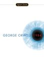

Books
Books have the ability to make us something higher, to open our mind to the thoughts of others in a way merely interacting cannot. These are books I have read and got something meaningful from, most of them have changed the way I think.

|
Understanding Power : Noam Chomsky |
| "The Indispensable Chomsky". Noam Chomsky is the author I have read the most of in the last few years. Brilliant, articulate, compassionate, well researched, insightful, he has inspired a generation of activists, and enraged a generation of those who have grown fat from the status quo. In a world where everyone was involved in a vibrant discussion of ideas he would be a household name. This book transcribes Chomsky's discussions on many of the important topics in our world over the last decades. His favourite topic is the use of US power to dominate world politics for the purposes of maintaining US privilege and position. He doesn't ever forget though, that the US has the highest proportion of people living in poverty and in prisons in the western world, and that it is not the land of plenty for everybody. The elite which dominates the US, has more in common with corporate elites in other countries than their own less well off population. Indeed they fear that potentially democratic population and do what they can to ensure that they are kept in line. If you would like to reclaim our world from corporations and vested interests, from military hegemony and corrupt elites, if you would like to see a world where the purpose of our institutions is helping people live their lives, rather than being used to make a dollar for an elite, you should read some Chomsky and this book is a great place to start. The Nation was right when they said "Not to have read [him] is to court genuine ignorance", whatever side of politics you are on, you should know what he has to say. |

|
Selling the Work Ethic : Sharon Beder |
| "From Puritan Pulpit to Corporate Pr". After reading Sharon Beder's awesome "Global Spin", I was an easy target for her next book. This book asks some questions about our society, that are forbidden in most of our media, both the corporate media due to self interest and our public media due to not wanting to be perceived as ideological. Why is our culture such a destructive machine, why is it that when we see the negative effects our lifestyles are having on the world, we motor on regardless, why are we working longer hours, not becoming any happier, and accepting an unequal society? It is because we have been controlled to follow a lifestyle that is often not in our own interests, we have had the way we judge ourselves and others implanted into us for very specific purposes, to ensure we are easily controlled and productive for the elites who use us for their wills. If you would like to know how this trick of societal manipulation has been accomplished, and why we ask someone upon meeting them what their job is, rather than what their hopes and dreams are, read this book. "Work Brings Freedom" - sign above entrance to Auschwitz. |

|
Fast Food Nation : Eric Schlosser |
|
"What the All-American Meal is Doing to the World". This book is a land mark book, one of those I often saw quoted in cool articles, so it was inevitable that I would read it. It lived up to all my expectations. We forget that fast food is a very modern phenomenon, and the megalithic corporations they have become have had a huge impact on our way of life, our environment and our health, all in a matter of a few decades. Whilst it is called "Fast Food Nation" it ranges far beyond the burger kings and describes the ideological environment the US has embraced. It talks about MacDonalds and KFC, but it also talks about Walmart, Disney, a host of other US corporations and the industries that supply them.
MacDonalds is one of its main focuses, because their corporate practises have become a model for many other US businesses. It tells the story of how MacDonalds was started by two brothers, and they were convinced by a businessman called Ray Kroc to franchise the business. Ray Kroc enventually set up a store directly across from original MacDonalds brothers store and ran them out of business, this was how Ray Kroc worked "This is rat eat rat, dog eat dog. I'll kill em, and I'm going to kill 'em before they kill me". He hated unions and non-conformists, and actively stood in the way of reform of his industry. He had ideological brethrens in many other US corporations, one notably being Walt Disney "it's the law of the universe that the strong shall survive and the weak shall fall by the wayside, and I don't give a damn what idealistic plan is cooked up", the phenomenally successful Disney empire is discussed as well. The book also talks about the power industry has over all the background processes that make up their meals. How they have resisted better testing of meat which has cost lives, ignored concerns about the treatment of animals and workers for the sake of profit, how they have contributed to 'mega-farms' and the changing of the rural way of life, and how low paid, unstable "McJobs" are fast becoming the only ones available for many young US citizens. This is an awesome book which is hard to do justice to in a short article, it is well written, packed with wide ranging abosrbing information, generally a must read. |

|
Rediscovering Gandhi : Yogesh Chadha |
| Albert Einstein said of Gandhi: "Generations to come will scarcely believe that such a one as this walked the earth in flesh and blood.". Gandhi was an extraordinarily complex man. Along with his better known qualities he was a believer in the central truth of all religions, he was a passionate vegetarian, wrote many books, was a qualified lawyer and had a fascination with his urine. Reading this book won't leave you with the impression that he was flawless, indeed he can be downright annoying and stubborn in sections of the book. What is the beautiful thing about him, the thing that set him apart from so many others, was his absolute conviction to live according to his ideals. As a London educated lawyer, a comfortable life would have been assured for him, however he could not live such a life in a world teeming with injustice, and he had the self belief that he could do something about it. In a world where compassionate ideals are dismissed as foolishness, here is a man who was prepared to stand for them to the point of great physical harm. In overcoming the British Empire's 100 year occupation of his homeland, he changed the world through his gift of an example of non violent struggle, and for this he will be remembered long after we are gone. Gandhi is one of the great men of history who succeeded against vast odds, and learning about him is a powerful tool for ones own life. "I can see in the midst of death, life persists, in the midst of untruth, truth persists, in the midst of darkness, light persists." - Mohandas K. Gandhi |

|
Stupid White Men : Michael Moore |
| "..and Other Sorry Excuses for the State of the Nation!". The Awful Truth, which was a television show hosted by Mike Moore, is one of my favourite shows of all time. Therefore I was a sucker to buy this book, along with the gazillion other people who did. It had it's moments, sometimes it was even funny, it even told me a couple of things I didn't know, but it left me wanting something more, a more comprehensive look at power, glimmers of an alternative social vision. If you are looking for an amusing book that points the finger at politicians etc, and don't want to look too deeply at changing things, especially yourself, then perhaps this book is for you. If you want to learn about the world, and really understand what is going on, then read the Greg Palast book "The Best Democracy Money Can Buy" which is also easy to read, has it's humorous moments and covers how Bush stole the election in much more detail (Mike Moore even said "Read it!" on it's cover), or if you really want to tackle the reigning ideology, read Chomsky. |
|
|
No Logo : Naomi Klein |
| This book was released with enough hype that I had heard about it for a while before I had any idea what it was about, therefore I assumed it was a stupid novel or something. I'm not sure how I came about to know what it was really about and read it, but I was very glad I did. This book talks about what is behind the facade of trends and brands in our modern world, how they are created and sustained both in the factories of impoverished countries, and the soulless designer offices of the PR world. Like all great books, it goes beyond any description I could give it in a short space, unions, pr, sweatshops, corporations, advertising to children, temporary workers, and it even gets around to letting you know what resistance to this is forming. The western world has changed rapidly and deeply in the last few decades, and books like No Logo and Fast Food Nation fill you in on whats driving it and why it's so harmful. We have become the product - if you want your humanity back, read No Logo. |

|
Growth Fetish : Clive Hamilton |
| This book looked really interesting from the first time I heard about it, and with Noam Chomsky recommending it on the cover (Along with Rev Tim Costello and Natasha Stott Despoja) I kept trawling the library for it until it finally came in. I must say the first few pages really rocked my world, particularly about the disjunct between the union and social justice facets of the left. From then on it got into what the book is about, that we have given economics far too central a position in the political and social life of our culture. It makes this point well, and quite thoroughly, I think it's a book that is important for people who think economic growth is the be all and end all of society to read. For those of us who already understand that this isn't the case, it will be less enlightening. However I don't think it was written with someone like me in mind, though that is not to say I didn't enjoy it, it is an easy read and makes a lot of points without which our culture will not move beyond it's current self destructive phase. |
|  | 1984 : George Orwell |
|
When I sit on the train watching people reading crime and fantasy novels, I despair at how stupid most non fiction is, and then I remember George Orwell's 1984. This is a towering work of fiction, whilst I love the Lord of the Rings which won a number of polls of best fiction book of the 20th century, 1984 would be my choice. I remember talking to a female friend who saw it as a love story, whereas I hardly noticed that aspect of the book, this is part of Orwell's genius, to write on so many levels that different readers will take away different aspects.
Set in a future world where the fascist ideological state controls every aspect of the citizens lives, it details the struggles of a man to find truth, love and his own distinct identity within it. The Party, personified by it's omnipotent leader Big Brother, controls Oceania, one of the world's three parts, along with Eastasia and Eurasia. They are perpetually at war with one another, shifting allegances so that no region ever gains complete dominance. The war is used as a reason to pry into peoples lives, to repress them, to give them a shoddy standard of living, and the battle front is an ever consuming machine for the consumption of goods. The main character in the book Winston Smith, despises his controlled life amidst the party, and hearing rumours of a resistance attempts to seek it out. What he finds is that War is Peace, Ignorance is Strength, and 1 plus 1 equals 3. To find out what this means you will have to read the book (although War is Peace is on often repeated line of our political leaders). 1984 is a classic of alternative thought, you will find it quoted by Chomsky, Pilger and many great writers, artists and thinkers. I sometimes wonder if the leaders of our current planet also use 1984 to advise them on how to control the population. In the book, ultimately there is no escape from Big Brother, let us hope this doesn't reflect our own world too closely. |
If there is a book you think I should read, send me the reasons why and I will see if I can get around to it. If you are really keen send it to me.
You can search and purchase books from this Amazon box...